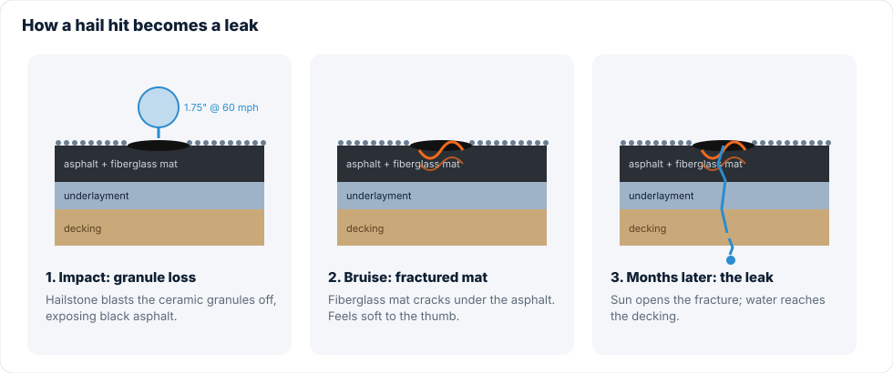

On the night of September 11, 2026, trained spotters reported 1.5-inch hail between Converse and Kirby, and photos posted from Converse neighborhoods showed stones in the 2 to 2.5-inch range. The National Weather Service warning that night called for golf-ball hail (1.75") and 60 mph gusts. That's well past the size that damages a standard asphalt roof.
Here's what happens to your shingles when a stone that size lands, and why the damage is so easy to miss.
Hail sizes, in plain English
| Common name | Diameter | Typical roof result |
|---|---|---|
| Dime / penny | 0.70–0.75" | Granule scuffing on older or brittle roofs |
| Quarter | 1.00" | NWS "severe" threshold. Bruising on 3-tab and aged shingles |
| Ping-pong ball | 1.50" | Bruising on most architectural shingles, dented soft metals |
| Golf ball | 1.75" | Widespread mat fractures, cracked vents, dented gutters, damaged window screens |
| Tennis / baseball | 2.50–2.75" | Punctures through shingles, broken skylights, siding holes |

The three layers of damage
1. Granule loss
The colored ceramic granules on top of a shingle are its sunscreen. A hail strike blasts them off in a roughly round pattern, exposing the black asphalt underneath. You'll often find a pile of granules at the bottom of downspouts the morning after a storm.
2. The bruise
Press a thumb on a hail hit and it feels soft, like a bruise on an apple. The fiberglass mat under the asphalt has fractured. This is the damage that matters to an adjuster, and it's invisible from the ground.
3. The crack
Over the following months, sun and heat cycles open those fractures into cracks. Water gets to the decking. That's the leak that shows up in winter, long after everyone has forgotten the storm.


What else gets hit
Adjusters look at "collateral" damage to confirm hail size and direction. On September 11 the storm moved southwest at 15 mph, so north- and east-facing slopes generally took the brunt. Check these:
- Gutters and downspouts: dings along the top lip and outer face.
- Roof vents and turbines: soft aluminum dents easily and shows hail size clearly.
- AC condenser fins: flattened fins on the side facing the storm.
- Window screens and beading: torn screens, dented metal frames.
- Painted surfaces: chipped paint on fascia, decks and mailboxes.
- Vehicles: if your car was dented in the driveway, your roof was hit at least as hard.

Does every hail-hit roof need replacing?
No. A newer Class 4 impact-resistant roof may shrug off golf-ball hail with cosmetic marks only. A 3-tab roof from 2012 probably won't. The honest answer comes from counting hits in a 10x10 test square on each slope, which is exactly what your adjuster will do. We count first, then tell you whether it's worth filing.
Book a free inspection or call 956-465-6045. We serve Converse, Kirby, Windcrest, Universal City, Live Oak, Schertz and Cibolo.